使用独立分布来建模联合分布是很方便的:\(p(x_1, x_2) = p(x_1) \cdot p(x_2)\)，此时条件分布等于边缘分布:\(p(x_2 \mid x_1) = p(x_2)\)。
然而，现实世界的问题总是涉及相互依赖的变量 \(p(x_1, x_2)\)，此时条件分布不等于边缘分布:\(p(x_2 \mid x_1) \neq p(x_2)\)。
如图 1、图 2 所示:
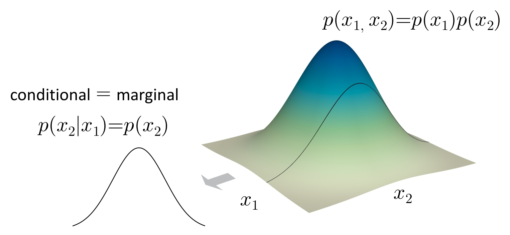
图1 独立分布:\(p(x_1, x_2) = p(x_1) \cdot p(x_2)\)，条件分布等于边缘分布 \(p(x_2 \mid x_1) = p(x_2)\)
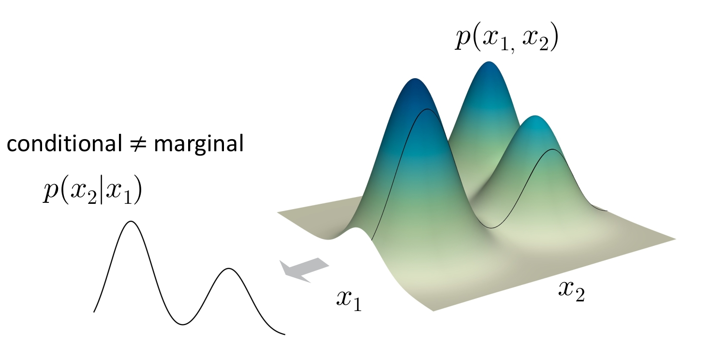
图2 依赖分布:\(p(x_1, x_2)\) 不可分解为独立乘积，条件分布不等于边缘分布 \(p(x_2 \mid x_1) \neq p(x_2)\)
方案 1:通过独立隐变量建模（例如 VAE）
方案 2:通过条件分布建模——即本文重点。
链式法则:任何联合分布都可以写成条件分布的乘积，例如:
\[p(A, B, C) = p(A) \cdot p(B \mid A) \cdot p(C \mid A, B)\]
条件分布建模有两个重要特点: 1. 顺序是任意的； 2. 分割是任意的。 如图 3～5 所示:
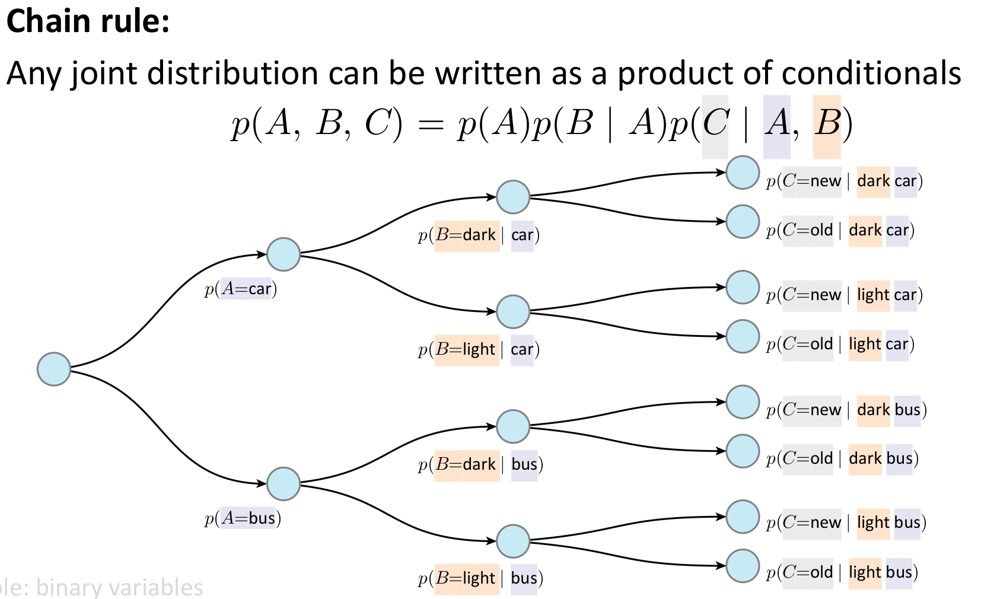
图3 联合分布拆分为条件分布乘积的展开形式
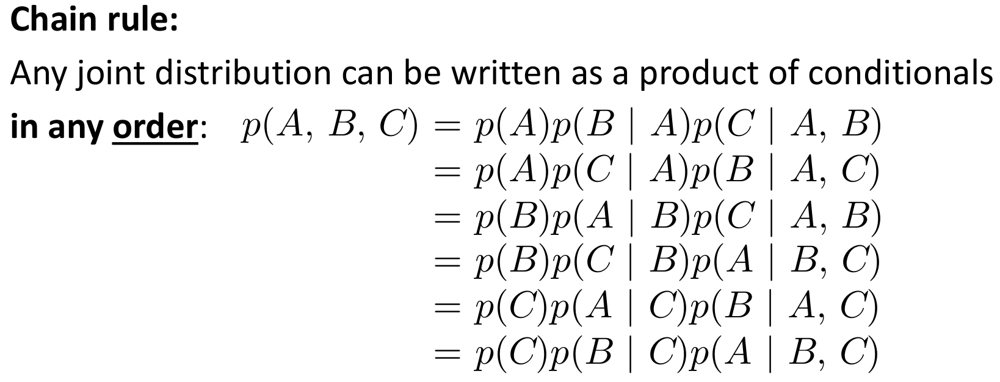
图4 条件分布的顺序是任意的
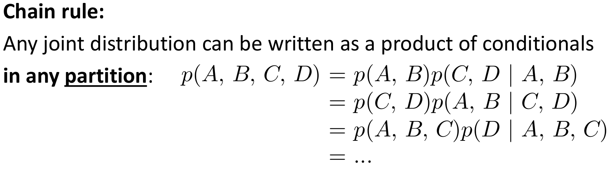
图5 条件分布的划分（分割）是任意的
与深度学习同源的精神:导数的链式法则用于反向传播，概率的链式法则用于联合分布分解。
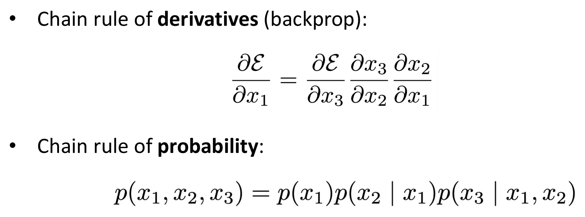
图6 导数的链式法则 & 概率的链式法则
\[p(A, B, C) = p_\theta(A) \cdot p_\phi(B \mid A) \cdot p_\psi(C \mid A, B)\]
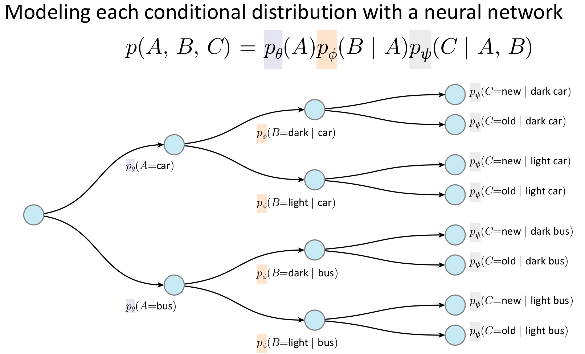
图7 对条件分布使用神经网络建模
注意:
将联合分布分解会诱导出依赖图，依赖图反映了先验知识。例如以下两种分解都是有效的:
\[p(A, B, C) = p(A) \cdot p(B \mid A) \cdot p(C \mid A, B)\]
\[p(A, B, C) = p(C) \cdot p(B \mid C) \cdot p(A \mid B, C)\]
某些分解方式可能导致更简单的分布（例如，若 C 是“原因”，则以 C 为根的分解可能更自然）。
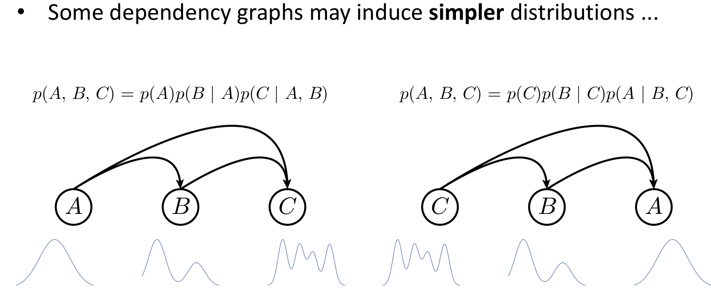
图8 不同的分解方式可能导致更简单的分布
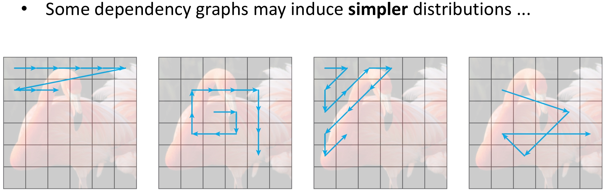
图9 不同的分解方式可能导致更简单的分布（续）
以上思想并不仅限于自回归模型。
注意:“自回归”描述的是推理阶段（inference-time）的行为；训练阶段不一定采用自回归方式（如可使用“教师强制/teacher forcing”）。
自回归通过条件分布的乘积来建模联合分布:
\[p(x_1, x_2, \ldots, x_T) = \prod_{t=1}^T p(x_t \mid x_{<t})\]
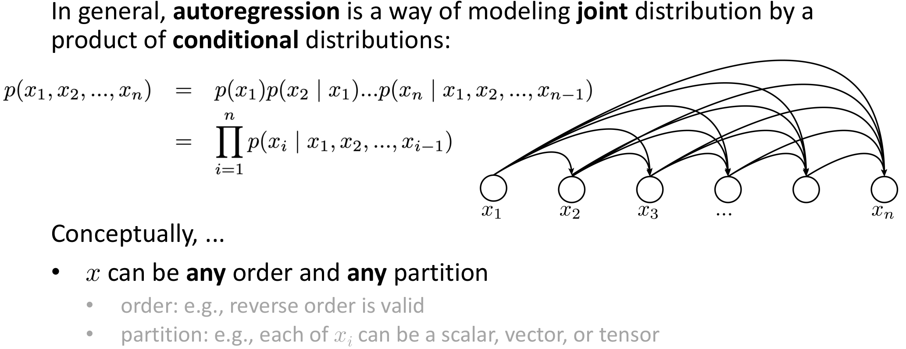
图10 自回归建模的定义
从概念上讲:
我们希望所选的分解方式能给出更简单的条件分布。例如以下两种分解都有效:
\[p(A, B, C) = p(A) \cdot p(B \mid A) \cdot p(C \mid A, B)\]
\[p(A, B, C) = p(C) \cdot p(B \mid C) \cdot p(A \mid B, C)\]
例子:手机键盘输入法就是一个自回归系统——之前的输出（已输入的词）能大幅缩小下一个可能输出（候选词）的范围，每个 \(p\) 都是类别分布。
图11 手机键盘输入法的自回归示例
时间/空间顺序:如“下一个词元预测”（next token prediction），使用时间顺序本身就引入了一种归纳偏置。
共享架构:每个条件分布 \(p(x_i \mid x_{<i})\) 概念上是不同的映射，但我们用共享的网络架构（RNN、CNN、Transformer 等）来建模它们。
共享权重:进一步地，不仅共享架构，还共享权重 \(\theta\)。这种权重共享是强归纳偏置——假设不同位置的条件生成过程具有相似的底层规律。
联合分布的链式分解本身完全精确、无近似；但实际建模时引入的归纳偏置会带来近似，例如:共享网络架构、共享参数、特定的变量排序。这些选择限制了表达能力，但通常能提升泛化性和训练效率。
该分布可以是连续分布（高斯、混合密度等）或离散分布（类别分布）。当输出是离散分布时，网络行为类似分类器——“回归”一词在实践中常做分类；自回归同样可用于连续数据（如 WaveNet 生成音频波形）。
网络建模 \(p(x_6 \mid x_{1,2,3,4,5})\):输入前 5 个变量，输出 1 个分布；输入来源是前几步的模型自身输出。这是递归过程，但不一定用 RNN 实现——可用 CNN 或 Transformer 等任何架构。
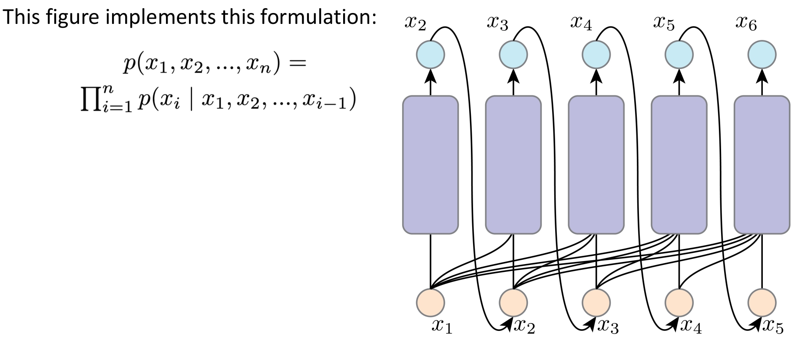
图12 自回归模型的建模过程
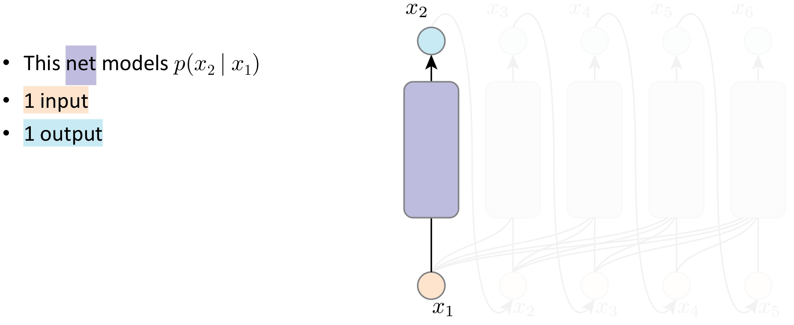
图13 自回归模型的推理路径（一）
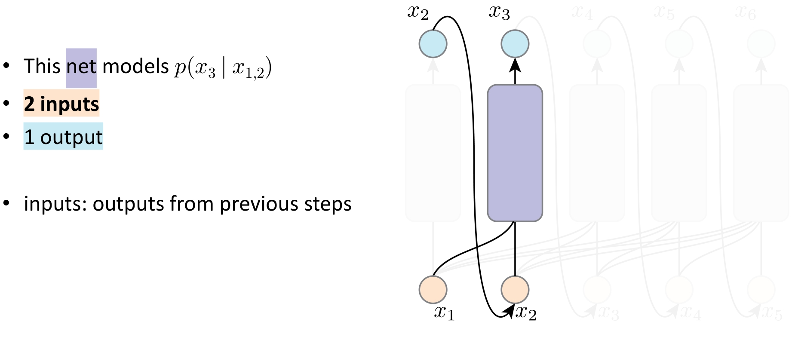
图14 自回归模型的推理路径（二）
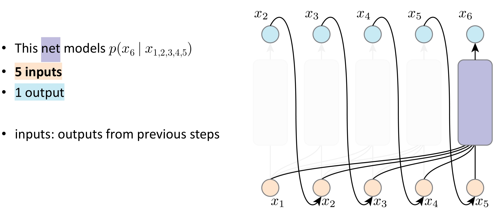
图15 自回归模型的推理路径（三）
考虑 \(x_6\) 的梯度路径需穿过所有之前的输出、采样操作、网络模块。结果:按推理时的计算图训练不可行（计算开销巨大，且采样操作通常不可导）。
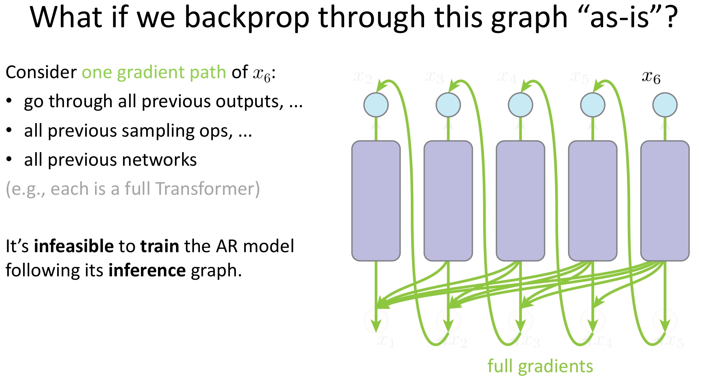
图16 为什么不能按照推理图反向传播
教师强制:输入直接来自真实数据（ground-truth），而非模型之前的输出。
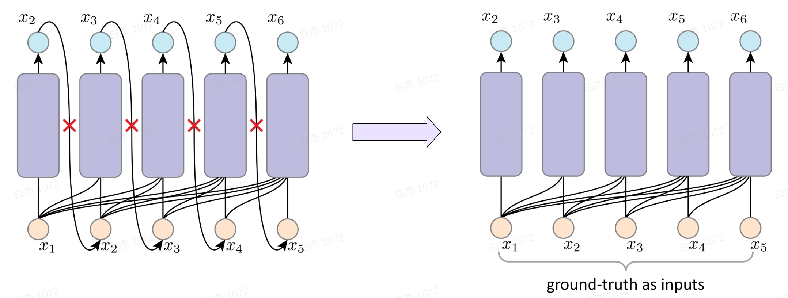
图17 左侧:使用模型之前的输出；右侧:使用真实数据（Teacher Forcing）
优点:反向传播路径大大缩短（每步独立计算梯度）；使用真实输入有助于训练稳定性。
缺点:训练与推理不一致（exposure bias）——训练看到“正确历史”，推理只能依赖“自己生成的历史”；分布偏移——模型从未见过自己犯错，推理出错时错误可能放大。
将一张图像视为像素序列，按光栅扫描顺序（raster order）逐行展开:从左到右、从上到下。
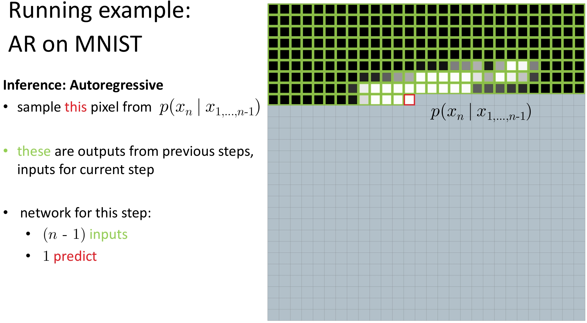
图18 MNIST 推理阶段:使用自回归方法
对第 \(n\) 个像素建模为 \(p(x_n \mid x_1, \ldots, x_{n-1})\)；\(x_1, \ldots, x_{n-1}\) 来自真实图像（ground-truth）。网络结构:\(n-1\) 个输入 → 1 个输出。
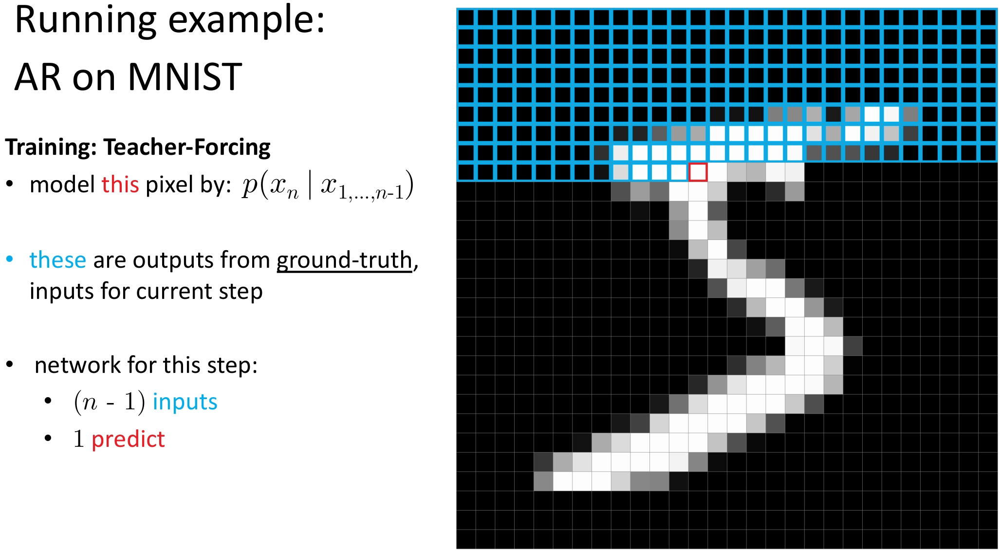
图19 MNIST 训练阶段:使用 Teacher Forcing 方法
上述描述不限定具体网络架构，适用于 RNN、CNN（如 PixelCNN）、Transformer（如 Image GPT）或任何能处理序列条件建模的架构。
下图实现的是如下形式的分解:
\[p(x_1, x_2, x_3, x_4, x_5) = p(x_1) \cdot p(x_2 \mid x_1) \cdot p(x_3 \mid x_1, x_2) \cdot p(x_4 \mid x_1, x_2, x_3) \cdot p(x_5 \mid x_1, x_2, x_3, x_4)\]
在本例中: * 使用了 5 个独立的网络； * 每个网络分别接收 1 到 5 个输入（即第 \(i\) 个网络接收前 \(i-1\) 个变量作为条件）。
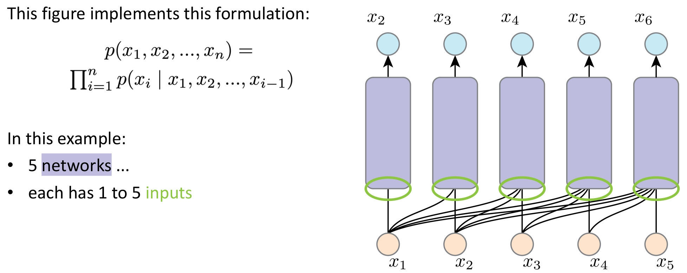
图20 原始形式的自回归模型（多个独立网络）
但我们能否更高效地实现它？
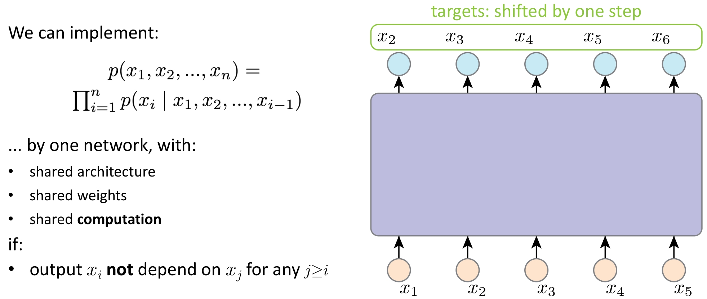
图21 使用单个网络实现自回归（共享计算）
我们可以用单个网络来实现整个自回归分解，前提是满足以下条件:
在此前提下，该单个网络可以实现: * 共享架构（shared architecture） * 共享参数（shared weights） * 共享中间计算（shared computation）
核心要点（Takeaways）:
联合分布分解为条件分布的乘积
\[p(x_1, x_2, \ldots, x_T) = \prod_{t=1}^T p(x_t \mid x_{<t})\]
→ 这是概率链式法则的直接应用，精确无近似。
归纳偏置（Inductive Bias）体现在:
推理阶段（Inference）:
→ 自回归方式生成:每一步将前序生成的输出作为当前输入，逐步采样。
训练阶段（Training）:
→ 通常采用 教师强制（Teacher Forcing）:使用真实历史（ground-truth）作为输入，而非模型自身预测。
✅ 关键思想:自回归是一种建模范式（如何分解和生成联合分布），而非某种特定模型。不同架构只是实现这一范式的不同工具。